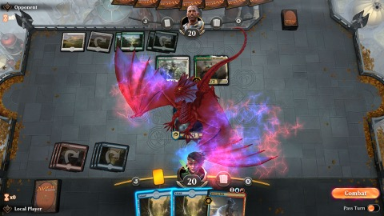

Top Ten Games of the Decade (2010-2019)
It’s the end of the 2010s and I really want to reflect on my life. But I feel like I’m in a flux part of my life and with so much happening around me, I thought it’d be easier to just do games of the decade.
A bit about me, I am a gamer but a hobbyist one at best. This is my personal list for games that impacted me the most. It is not commentary of the “best” games, there are games I played that were objectively great that didn’t make my list because they didn’t have as much of an impact on me.
Honorable Mentions⌗
Image Courtesy of IGDB
These are all games that I loved, but didn’t make my list for some reason. A different me on a different day might have put any of these on the list, but today they fall just short. Here they are in no particular order.
Wolf Among Us – Great story, fantastic game. But it felt short and I want so much more.
Rogue Legacy – This is probably the game I come back to the most. It took the horribly unaproachable roguelike genre and made it fun, easy to digest, quick, and fun.
Mario Odyssey – Very close to being on my list. As much as I loved it, there was just something missing from Odyssey. A central hub world or more post game content would have made this the perfect Mario game.
Cities Skylines – This game perfected the SimCity formula and made it possible to build amazing cities that didn’t trend towards “New York but different”.
Cuphead – This game is HARD. Like, I like hard games, as you’ll see. But this game is hard. The aesthetics are amazing and the gameplay is smooth. I love it so much but I need to take this game in doses.
Civilization V – I love 4X games in general, but I just don’t have the hours in my life to dedicate to them. Plus it wouldn’t be fair to put Civ V in this list since Civ VI is apparently a better game on every level, but I haven’t played Civ VI yet.
Fallout New Vegas – I made myself only choose one Bethesda game, and Skyrim was more up my alley. If I was 10% more of a post apocalyptic person instead of a fantasy person this would be #5 on my list (spoilers I guess). But New Vegas is so huge and such a great game and I have so much love for it.
Overwatch - I loved Overwatch. I did. It was my favorite multiplayer FPS when it came out. I grew up on CS and TF2 and for a non-Valve game to take that spot was amazing. But over time the game has changed and I enjoy It less. I don’t want to give any specific reasons, but Overwatch feels less like a wonderland compared to when it came out, and that’s okay. It still fills a roll in my life, just less so.
10. iOS Games⌗
Image Courtesy of Peyton Hable
I couldn’t choose just one game to represent iOS, so I gave it a whole category. In the decade, smartphones really became commonplace and with that, a new way to play games. And smartphone games have been divisive to say the least. Mobile games went from creative to piles of microtransactions. Currently, mobile games have a rep for being basic, full of timers, and full of ways to accidentally spend a substantial amount of money on digital gems, but a few games really stood out to me.
Holedown – It’s a very simple concept. An endless Breakout-style game, but digging down instead of going up. But the game is so smooth and such a pleasure to play that I just fell in love with it.
Mini Metro and Mini Motorways - I know Mini Metro is on other consoles but it feels at home on a phone. And the sequel took so much of what made Mini Metro great and just built on it.
iOS ports like Stardew Valley, Evoland, Roller Coaster Tycoon, Runescape, Tropico etc. These are all games that made their mark on the PC, and developers were able to fully take advantage of touch controls and make the games feel as smooth on iOS as they felt on consoles.
Apple Arcade – Recently, Apple launched a subscription service with access to more than 100 games. It would take too long to explain all of them, so here is a shortlist of games to try: Sayonara Wildhearts, Mini Motorways (I like it that much I’m mentioning it twice, deal with it), Card of Darkness (made by Pendleton Ward, creator of Adventure Time), Outsiders, What the Golf, Assemble with Care, Exit the Gungeon, Oceanhorn 2, there’s too many good games to list.
9. Mario Maker 2⌗
Image Courtesy of US Gamer
This game was everything I wanted in a 2D Mario game. It had a good campaign, it played great, the mechanics were all there. And there were endless levels that did wild things. I didn’t get to play much of the original since it was on a Wii U and no one bought the Wii U, and the 3DS version wasn’t a full version.
But Mario Maker 2 is something else. The creativity coming out of level creators is amazing. Just watching some good MM2 streamers like Poo, Barb, Dode, Spacekat, etc., and you can see how wild a Mario game can get when you apply a bit of creativity, and more skill than I’ll ever have.
The only reason this isn’t higher is because I haven’t been able to put enough time into this, and don’t have the skill to play the harder levels. I just want to beat a Panga level once in my life.
8. Magic Arena⌗

Image Courtesy of Wizards of the Coast
The game that brought me back into Magic. I was am obsessed with Magic and it was really a huge loss for me when I drifted away from playing paper Magic. I have no LGS right now and nowhere to play FNM. I tried Magic Online but I can only handle playing DOS games for so long. Magic Arena is something else. It is a truly modern Magic game. It plays fantastically. There are bugs but they’re minor, at least compared to MTGO. The economic model mostly makes sense and I don’t get the feeling of being drained for all the money I have compared to other online TCGs. The game is super playable casually and provides the competitive experience I need. Overall, the only reason this isn’t higher is cause of Oko. This is a near perfect game, and I hope as Magic goes on Wizards keeps giving MTGA more love, and crafts Magic to take advantage of such a stellar client.
7. Destiny 2⌗
Image Courtesy of IGDB
This is the game I wanted as a kid. I grew up playing Goldeneye as a small kid, and my very first online experience was Star Wars Battlefront. I also got into Runescape and eventually fell into a pit of Free to Play MMOs. And this whole time, I wanted a game that delivered the kind of consistent world, progression, player bases, and exploration that MMOs had, but as an FPS. Planetside 2 existed, but it wasn’t great and it was more a Proto-Battle Royale than a true MMO. Then came Destiny, for the PS3 and Xbox. I didn’t have those systems. I watched hungrily at Destiny, wanting to play them, almost buying a PS3 just for it.
Then Destiny 2 was announced for PC. Oh I needed this game. And having played it consistently for over a year, this is everything I wanted. I only wish MMOFPSs were more common, since I feel like there’s still so much to explore in this genre. But for me, Destiny 2 (specifically post-Forsaken), was my dream game. And still is. I still play it weekly. Occasionally I binge it hard. This is a game I waited for and dreamed about for over a decade.
And I kind of built a whole relationship with my girlfriend over this game. So maybe that goes into this being on my list, but it’s my list and that’s my choice.
6. Pokemon Sword/Shield⌗
Image Courtesy of Peyton Hable
This game got me back into Magic Pokemon. I played obsessively from Gen 2 through 4, went back and played Gen 1. I knew every Pokemon up through Gen 4, knew type differences, was getting into IVs and EVs. Then life happened. I never got my hands on a Gen 5 game other than a week borrowing my sis’, and before I knew it Gen 5, 6, and 7 all passed me by. Holy shit I missed out on almost half the Pokemon games made.
So when I got Sword, I was nervous. The snippets I played of Gens 5-7 weren’t fantastic. I felt like parts of the game I loved were taken out or simplified. And starting Sword, I felt that too. But then I started seeing Sword for what it is. A game designed for a modern player. I wasn’t 12 anymore. I didn’t have 4 hours after school to just ride my bike around Victory Road leveling my Pokemon individually. All the things “making the game easier” were quality of life changes that kept me playing. I could tweak my team at any point. I didn’t have to spend hours leveling my team, I instead can spend that time playing the story.
Image Courtesy of Peyton Hable
And to balance the Quality of Life changes, they added challenge to so many other parts. The Gyms are so creative, and the Gym leaders are tough. The Wild Area is the Safari Zone perfected. The fact that you can face a level 50 Pokemon coming out of your first town really makes the Pokemon world feel like a world. It was no longer a fully linear game. This feels like a world people and Pokemon live in. And the whole game has not only made me fall in love with Pokemon all over again, and provide me a game I can play while working full-time and feel fully fulfilled, but it also provided a gateway for my partner, who has never played a Pokemon game, to come in and understand the wild complex world of Pokemon and fall in love with it too.
5. The Elder Scrolls V: Skyrim⌗
Image Courtesy of IGDB
What can I say about Skyrim that hasn’t already been said before. This game changed Western RPGs. It took a recipe that was introduced in Morrowind, and improved in Oblivion, and perfected it. By perfect I mean this is still a pile of bugs, but a nice one.
Skyrim succeeded where Oblivion failed I think mostly cause it’s pretty. It’s hard to convince someone to play a game that looks odd. Skyrim succeeded in creating a game that gamers were immediately attracted to. And once gamers started playing, it opened up an entire world that you could put 300+ hours into it (without Mods) and still not discover everything. It created a world of memes (Arrow Knee lol) and it exposed a lot of gamers who were used to linear games to a truly open world game. You could put 150 hours into the game and not touch the main story. Or you can complete the main story in 20 hours. The game gives you the freedom to completely ignore the main story and fully enjoy everything.
And every Western RPG, along with a few JRPGs (I’ll get to that) have been heavily inspired by Skyrim, taken lessons from it, and it’s really expanded on the genre. The Witcher Series is definitely one that benefit from Skyrim existing. And Skyrim is a game I come back and play often. I played it around the time it came out. And over the years I’ve probably played it a half a dozen times as different saves, doing completely different things, exploring different worlds, and never having a real repeated experience.
And that’s before the wild, amazing mod community that exists on PC. You can get mods to improve quality of life like a map that works as a map or better menus, you can get texture mods to make the game way prettier. You can get mods to add new quests, storylines, weapons, enemies, clothing, etc. Yes there’s even a mod to do that, get your mind out of the gutter.
The only reason Skyrim isn’t higher is cause, well, it’s a buggy mess. Even with years of patches, tons of unofficial patches, DLC, everything, it is still full of bugs. And Skyrim has that weird way of having endearing bugs. Most other games, bugs are horrible and run the game. In Skyrim, they’re still bugs, but they have a kind of fun around them most games don’t. Most people who were heavily on the internet in 2011-2013ish knows those videos where you see a horse climbing a vertical wall on a mountain, or taking one step and dying, or clipping, or having characters be where they never should be. And while it made it fun, it can be tedious when autosave puts you in an impossible place and you’re stuck dying cause of some weird bug.
4. Virtual Reality⌗
Image Courtesy of Will Smith (not that one)
Another category, not so much cause I can’t pick a game, but because I haven’t had much time to play VR. In this decade, VR came back from the dead, from a curiosity you’d find in a Disney World arcade, to something that anyone could have in their homes. The first time I tried VR, it changed my life. I’ve only been able to use it a handful of times, but each time has cemented in me how important VR is. But if I had to pick a game.

Image Courtesy of IGDB
Beat Saber – Enough has been written about this. Honestly, the best description of “Guitar Hero with Lightsabers” will never be enough. Watch gameplays, or find anywhere that does VR demos and try it. It’s worth it.
3. Celeste⌗
Image Courtesy of IGDB
This game had everything I loved. Tricky platforming. A lot of skill. Rewarding gameplay. A killer soundtrack. And a story that hit me just the right way. When Celeste came out, I was a bit lost. A lot had happened in my life, and here comes such a perfect game about overcoming obstacles, and finding yourself along the way. I do not want to give away any more of the story, but for a game I maybe put 20 hours into, I think about it constantly. It gave me hope. It inspired me. It challenged me. And as someone who is terrible at completing games, I completed this one multiple times. Just gameplay alone this deserves to be in my top 10, add in the story and it’s honestly very close to being my number 1.
2. Portal 2⌗

Image Courtesy of IGDB
Portal was the first game that really got me to say “wait, you can do that with a game?” It was a nearly perfect game, and honestly the reason I got into PC gaming. A few months before Portal 2 was released, Portal 1 was made free and I ended up getting a graphics card for my parents’ desktop just to be able to play it. Then Portal 2 came out and I put way to many hours into it. This game took everything that made Portal great, took out and changed the few pain points that existed, and crafted a beautiful story in the universe they already created.
Portal 2’s story was so great. It expanded this “Science lab” into this massive pseudo-government operation run by essentially a very angry J.K. Simmons, and created a truly human story with very non-human creatures. You felt for GLaDOS. She wasn’t just some crazy machine anymore. She was a tragic character. You feel for Wheatley and his quest, you fall in love with the story between J. Jonah Jameson Cave Johnson and GLaDOS. The game’s story is told in such an unorthodox way, and at times it feels like you’re along for the ride in someone else’s story. But even then, Portal doesn’t stop delivering magic.
The Co-op campaign is completely separate from the main game and could have been its own game. While the storyline is more simple, the way the puzzles are designed to be played by two players without each player being bored is amazing. And this is the best test for Communication in a relationship let me tell you that.
1. The Legend of Zelda: Breath of the Wild⌗
This game got me back into Magic Pokemon Zelda. Oh my god there’s a trend.
Image Courtesy of me :)
Breath of the Wild is what happens when you have 20+ years to polish the Legend of Zelda formula, 10 years to polish the Skyrim formula, and combine them absolutely perfectly. BotW might as well be a sequel to Skyrim, it borrows so much from it. You’re given a short tutorial, and then essentially faced with an open world with essentially a “you can go this way if you want, but I’m not the boss of you”. If you wanted to leave the starting area and immediately go fight Ganon, you can. If you want to collect every single Korok Seed, you can. If you just wanna sled down the tallest mountain and get sicccc air, you can. The game gives you absolute freedom. The world is the Zelda world. All the monsters you love are there.
All the gameplay from the 3D Zeldas’ have been refined to where the combat feels great. The game, instead of punishing you from diverting from the main story, rewards you for exploring. The main plot of the game is always there, and you don’t lose your way how you would with Skyrim. And the word I keep coming back to, polish, is everywhere. While Skyrim is a Boogeyman of bugs that somehow learned to walk, Zelda is truly a Nintendo game. The seams are always never visible. The game has a reason for almost everything.
I got this game in a time of my life where I had almost no time for games. And somehow I put hours upon hours into it. The game never felt dull. There was always something to do, somewhere to explore. You’d find somewhere on the map that you think the game devs would ignore cause who would go there and there’s a physics challenge there. Or there’s a powerful enemy. Or a shrine. Or a Korok. Every single corner of this game was lovingly crafted in a way to provide the best gameplay experience I’ve ever had. I come back to this game not with guilt or shame that I’ve been away or not finished the story, but with joy and excitement to explore. Dungeons I thought were impossible I’m coming back to. I’m going to areas I wrote off a year ago. This game has so much in it.
And that’s without factoring in the DLC. Nintendo has done a fantastic job of creating DLC that expands the game without taking away what makes the game magical. The DLC doesn’t feel forced, it doesn’t feel like a cash grab. And it doesn’t feel like Nintendo is charging extra for the full experience. It is a nice addition to the game that make the game better.
The only pause I have for BotW is the lack of Overworld/Dungeon and the slight repetitiveness of shrines. One of my favorite parts of old Zelda games was clearing dungeons and solving puzzles. And this game didn’t really have much of that, other than the Divine Beasts. But the game more than made up for it with it’s expansive Overworld, easily the best overworld of any Zelda game.
This game honestly helped me love games again. At a time I was jaded at games and Triple A games in general, and Breath of the Wild gave me hope that people are still crafting games with love. Breath of the Wild is my game of the decade, and honestly the best game I have ever played.
Footnote: Before anyone complains about me not talking about [insert game here], this list is all games that I have played. It’s not a definitive list and definitely not meant to be “the best games ever”. Just the games that impacted me.
Here is a list of games that might have made my list if I played them, but time exists.
GTA V
The Last of Us
Mass Effect (any)
Dark Souls (genre)
Witcher 3
Outer Worlds
Spider-Man PS4
Bioshock Infinite
Red Dead (either really)
Baba is You
Life is Strange
4X Games - I love the genre but any one game is dedicating my life to it.
Firewatch
That one game you’re mad about.
Emmanuel Medina
Emmanuel Medina is a musician, gamer, and Magic player from Southern California.